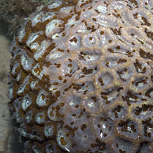
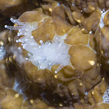
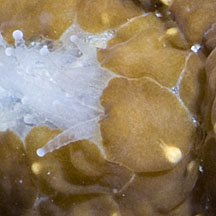
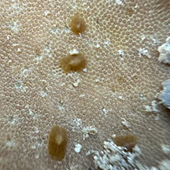

|
|
| flatworms text index | photo index |
| worms |
| Acoel
worms awaiting identification Order Acoela updated Oct 2016 Where seen? These tiny flattened worms are often seen on other animals, usually cnidarians such as hard corals of various species and corallimorphs. What are aceol flatworms? They are unsegmented worms that belong to Class Acoela. Some put them in Phylum Platyhelminthes like the other larger flatworms. Features: 1cm long or less. Often circular in shape and brown, sometimes with a white stripe or short white line or a yellow spot. The brown colour comes from the symbiotic algae in their bodies. Many species reproduce asexually by fragmentation. What do they eat? It is believed that they graze on the edible bits that get trapped in the mucus produced by the host animals that they are found on. What eats them? Among their predators are tailed slugs (Family Aglajidae). |
 A hard coral thickly covered with acoel worms. Pulau Semakau, Oct 11 |
 Pulau Semakau, Oct 11 |
 |


| Acoel worms on Singapore shores |
On wildsingapore
flickr
|
| Other sightings on Singapore shores |
 On Leathery soft coral Terumbu Pempang Tengah, May 25 Photo shared by Tammy Lim on facebook. |
References
|